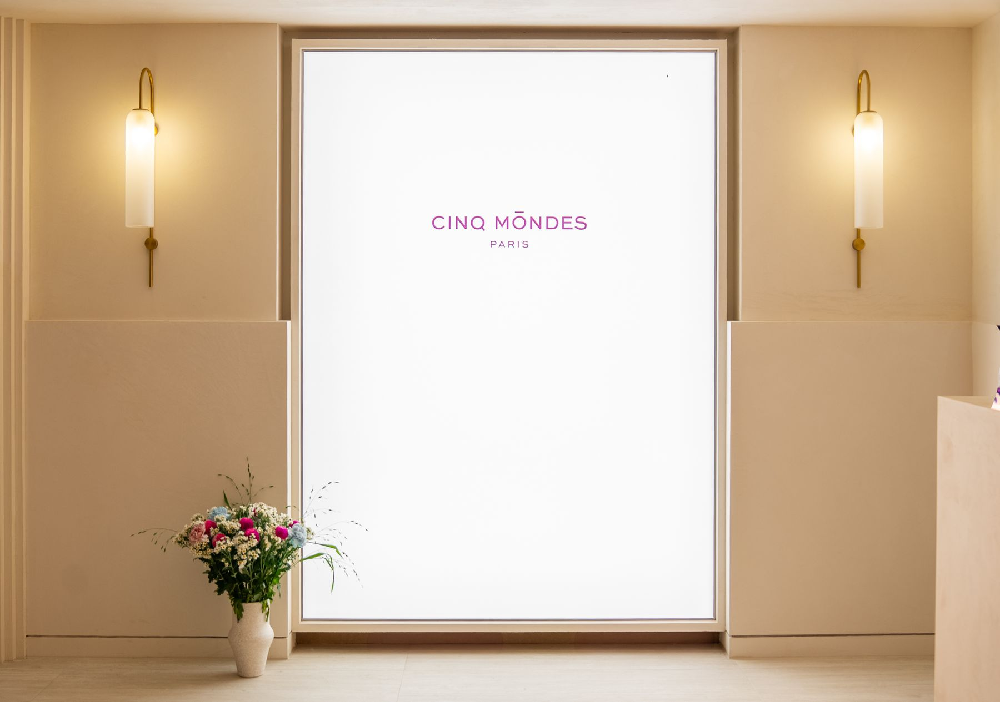
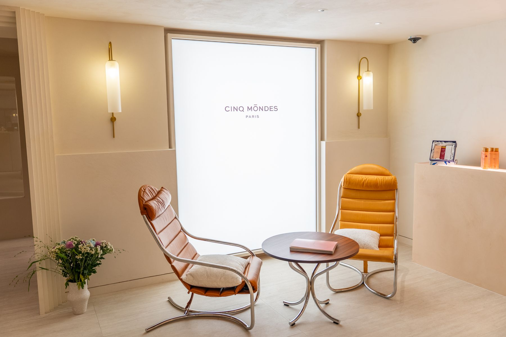

Wellperion · Company Introduction
A Day,
Well Completed.
하루의 완성, 웰페리온
How to read this
같은 회사를, 세 독자가 다르게 읽습니다.
이 문서는 회원·직원·파트너 세 관점을 함께 담았습니다. 어느 자리에서 읽든 결론은 하나입니다 — 웰페리온은 하루의 품질을 설계하는 곳입니다.
For Members
회원 관점
운동부터 회복까지, 하루의 완성도를 한 공간·한 멤버십 안에서 설계합니다. 오늘 온 사람이 내일도 오게 만드는 것이 목표입니다.
For Team
직원 관점
사람이 바뀌어도 품질이 흔들리지 않도록, 운영을 시스템으로 만듭니다. 체크리스트·자동화·AI가 반복을 맡고 사람은 회원을 봅니다.
For Partners
파트너 관점
9년간 검증된 운영 자산 위에 브랜드를 함께 확장합니다. 공간·회원·운영 노하우가 파트너의 진입 비용을 낮춥니다.


01 · Who We Are
한남동에서 시작된
프리미엄 라이프스타일의 새 기준.
웰페리온은 2017년 한남동에서 시작한 3,000평 규모의 프리미엄 라이프스타일 클럽입니다. 우리는 건강을 일회성 이벤트가 아니라 매일의 루틴으로 자리 잡게 만드는 일을 합니다.
우리의 미션
회원 한 사람의 건강한 하루를 완성한다.
운동은 시작보다 지속이 어렵고, 회복은 늘 뒤로 미뤄집니다. 웰페리온은 운동과 회복을 한 공간 · 한 멤버십 · 한 동선 안에 담아, 하루하루의 건강이 자연스럽게 평생으로 이어지도록 설계합니다.
포지셔닝
한남동이라는 동네의 결을 따라 지어진 프리미엄 라이프스타일 클럽. 운동 코어를 중심에 두고 회복·힐링을 같은 공간에서 제공하며, 세계적인 파트너 브랜드와의 협업으로 경험의 폭을 넓혀갑니다.
02 · Track Record
9년의 궤적, 그리고 다음 10년.
2017년 이래 웰페리온은 멤버십 운영·회원 경험·시설 관리의 노하우를 축적해 왔습니다. 이 검증된 운영 자산이 회복과 파트너십을 더해 브랜드를 확장하는 토대가 됩니다.
축적된 운영 자산
- 대규모 회원 멤버십 운영 경험
- 16개 카테고리 프로그램 동시 운영
- 시설·안전·법정점검 관리 체계
- 파트너 강사·팀 운영 구조
다음 10년의 방향
- 수익화 구조 고도화 — 기존 수익 극대화 + 신규 수익원
- 공간 밸류업 — 시설·인테리어·서비스 품질 격상
- 운영 자동화 — AI·시스템 기반 효율 극대화
- 브랜드 확장 — 위탁운영 · 모델 복제
03 · The Movement Core
운동의 코어.
하루를 깨우는 자리.
웰페리온의 중심에는 종합 스포츠클럽이 있습니다. 헬스부터 수영·골프·스쿼시·그룹 클래스까지 — 한 멤버십 안에서 매일의 운동이 완결됩니다.


04 · Programs
한 공간, 열여섯 가지 경험.
| 카테고리 | 프로그램 |
|---|---|
| 핵심 스포츠 | 헬스(TechnoGym) · 수영(25m) · 골프(GDR) · 스쿼시 |
| 그룹 운동 | G.X. · 요가 · 필라테스(STOTT) · 바레 · 발레 |
| 퍼포먼스 | 뮤지컬 · 줌바 · 라인댄스 |
| 웰니스 · 회복 | 명상 · 스파·사우나 · 헤어살롱 · 라운지·카페 |
왜 한 곳에 모으는가
운동·회복·휴식이 각각 다른 장소에 있으면 하루가 끊깁니다. 웰페리온은 이동 없이 이어지는 한 동선을 만들어, 지속이 어려운 습관을 지속 가능하게 만듭니다.

05 · The Restore Partnership
회복의 깊이를 더하다 —
Cinq Mondes.
운동이 하루를 깨운다면, 회복은 하루를 정리합니다. 웰페리온은 회복의 격을 높이기 위해 파리의 럭셔리 스파 브랜드 Cinq Mondes(생크몽드)를 외부 파트너 시설로 맞이했습니다.
파트너십의 형태
| 구분 | 외부 파트너 시설 · 웰페리온 내 입점 |
|---|---|
| 브랜드 | Cinq Mondes · Paris |
| 영역 | 스파 트리트먼트 · 페이셜 · 보디 |
| 회원 경험 | 운동 후 같은 동선에서 회복까지 연결 |
검증된 운영 자산 위에 세계적인 파트너십을 더해, 브랜드를 한 단계 더 넓혀갑니다. 파트너에게는 이미 모인 회원과 검증된 공간이, 회원에게는 이동 없는 회복이 남습니다.

06 · Restore Lineup
운동 다음의 시간까지,
같은 공간 안에서.
스파·사우나·살롱·라운지 — 회복은 부가 서비스가 아니라 하루를 완성하는 마지막 조각입니다.



스파 · 사우나
운동 직후의 이완. 회원 누구나 같은 동선에서 이용합니다.
Cinq Mondes
전문 트리트먼트로 회복의 깊이를 더하는 파트너 시설.
살롱 · 라운지
헤어살롱과 라운지·카페까지 — 다음 일정으로 그대로 이어집니다.
07 · One Flow
운동과 회복이
한 동선 안에서 이어진다.
웰페리온의 차별점은 시설의 개수가 아니라 끊기지 않는 순서입니다. 이동·예약·결제가 하나로 묶여 하루가 끊기지 않습니다.
08 · Expansion
검증된 자산 위에,
브랜드를 넓혀간다.
웰페리온의 확장은 새 건물을 짓는 일이 아니라 검증된 운영을 옮기는 일입니다. 9년의 운영 체계·매뉴얼·자동화가 그대로 이식됩니다.
| 확장 축 | 내용 |
|---|---|
| 파트너 브랜드 | Cinq Mondes처럼 검증된 외부 브랜드를 공간 안으로 — 회원 경험을 넓히고 파트너는 회원 기반을 얻는다 |
| 위탁 운영 | 웰페리온의 운영 체계를 다른 시설에 적용 — 사람이 아니라 시스템이 품질을 보증 |
| 모델 복제 | 한남동에서 검증한 모델을 다른 지역·다른 규모로 |
| 공간 자산 수익화 | 유휴 공간·콘텐츠·광고 등 보유 자산의 수익 전환 |
확장의 전제 — 시스템
확장은 운영이 흔들리지 않을 때만 가능합니다. 그래서 웰페리온은 사람이 바뀌어도 품질이 유지되는 구조를 먼저 만듭니다 — 체크리스트 경영, 매뉴얼 정비, AI 기반 운영 자동화.
09 · Positioning
웰페리온이 서 있는 자리.
웰페리온은 운동 시설도, 스파도, 사교 클럽도 아닙니다. 그 사이에 있는 하루의 인프라입니다.
일반 스포츠센터
운동만 해결
시설과 가격 중심. 회복·머무름은 각자 알아서.
웰페리온
하루 전체를 설계
운동 + 회복 + 머무름을 한 동선에. 매일 오는 이유를 만든다.
럭셔리 스파 · 클럽
회복·사교만 해결
특별한 날의 방문. 일상의 루틴은 되지 못한다.
브랜드 언어
쓰는 말
스포츠클럽 · 프리미엄 라이프스타일 클럽 · 하루의 완성 · 루틴 · 회복
쓰지 않는 말
피트니스 · 헬스장 · 하이엔드 프라이빗 · 사교
10 · Brand
하나의 철학,
아홉 개의 얼굴.
프로그램은 열여섯 가지지만 철학은 하나입니다 — 회원 한 사람의 건강한 하루를 완성한다. 모든 공간과 서비스는 그 문장에서 나옵니다.
일상성
특별한 날이 아니라 매일. 지속을 설계한다.
연결성
운동과 회복이 끊기지 않는다. 한 동선.
절제된 고급감
과시하지 않는다. 결로 드러낸다.
동네의 결
한남동이라는 맥락 위에 지어졌다.
시스템
사람이 바뀌어도 품질이 유지된다.
파트너십
잘하는 곳과 함께 경험을 넓힌다.
컬러 & 타이포그래피
Contact
하루의 완성,
여기서 시작하세요.
A Day, Well Completed.
| 상호 | 주식회사 웰페리온 (Wellperion) |
|---|---|
| 주소 | 서울특별시 용산구 서빙고로 413, 101동 지1층 101호외 2 (한남동) |
| 대표 전화 | 02-6261-1200 |
| 문의 | wellperion.com/ko/inquiry · 투어·상담은 사전 예약제 |